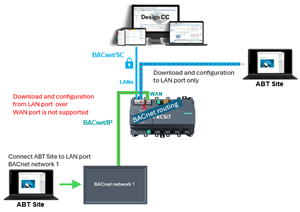
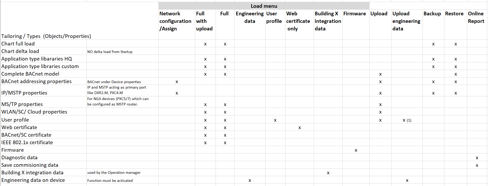
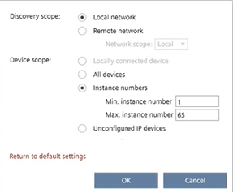

配置和下载
这Configure and download任务允许您打开包含工程设备的工作包。您可以配置和加载预先设计的设备或手动配置和加载设备。工作区包括Engineered devices和Discovered devices选项卡。
将 ABT 站点中设计的配置下载到已发现设备的过程分为两个步骤。
- Download the device network configurations
- Download the application configuration
Downloading device configurations
每个步骤都涉及设备的重新启动。在Log查看器，检查Jobs选项卡以了解当前作业的进度。

不支持通过 WAN 端口进行工程和配置，无法执行下载或上传。在这种情况下，ABT 站点必须直接连接到 BACnet/IP 网络。

1 | 任务选择器 | 2 | 工程设备选项卡 |
3 | 已发现的设备选项卡 | 4 | 工具栏 |
5 | 详细信息窗格 |
| |
① Task selector
任务 | 描述 |
|---|---|
配置和下载 | 当前任务 |
全局功能 | |
出口 | |
调试和诊断 | |
群众指挥 | Mass commanding用于房间自动化 |
② Engineered devices tab
这Engineered devices选项卡包含基于所选工作包的全部或部分工程设备。
Tab toolbar
命令 | 描述 |
|---|---|
工作包 | 此列表框允许您从工作包（Pack & Go 文件）列表中进行选择，或者All devices. |
云端注册 | 连接到西门子云。 |
加载 | 点击Load显示所有可用的命令。 |
Network configuration 使用选定的工程设备配置选定已发现设备的网络配置。 | |
Full with upload (device may restart) 将所选工程设备的应用程序配置加载到所选已发现设备中。 在下载应用程序配置之前上传所有设备数据。 Note 这是推荐的BACnet/SC certificate下载或更新证书的工作流程。 | |
Full (device may restart) 将所选工程设备的应用程序配置加载到所选已发现设备中。 仅在下载应用程序配置之前上传已在线修改的用户配置文件（访问控制配置文件）。 | |
Engineering data 将所选工程设备的工程数据加载到所选已发现设备中。 菜单可用时Enable engineering data on device已启用。 | |
User profile Loads the user profile (ACP) for the selected device. Overwriting online modified user profiles is optional. | |
Only updated certificates 在所选设备中加载操作证书或根证书。 | |
Building X integration data 将所选工程设备的集成数据 (JSON.zip) 加载到所选已发现设备中。 | |
Firmware 将固件加载到目标设备中。 |
Engineered devices table
这Engineered devices 表列出了建筑结构或所选工作包的内容。
柱子 | 描述 |
|---|---|
待办事项 | 列出接下来要执行的任务（下载、上传等） |
授权 | |
姓名 | 列出建筑物名称。它还列出了文件夹Unplaced areas, Unplaced devices, andUnused devices。左侧的扩展器可以让您查看建筑结构。 |
地点 | 列出设备的位置。 |
Equip-ID | 参考机械计划和印刷品。 |
设备类型 | 列出设备类型。 |
地址 | 列出 IP 设备的 IP 地址和 UDP 端口，或 MS/TP 设备的网络号和 MAC 地址（例如 7001-23。其中网络号为 7001，MAC 地址为 23）。 |
开发。研究所。 # | 与 BACnet 设备关联的设备实例号。 |
序列号 | 列出物理设备的序列号。 |
Context menu
要显示上下文菜单，请右键单击包含设备的行。
命令 | 描述 |
|---|---|
转到工程 | 打开Engineering成分。 |
前往编程 | 打开Programming编辑。 |
查找匹配的序列号 | 列出与所选设备具有相同序列号的所有设备。 |
查找匹配的设备类型 | 列出与所选设备类型相同的任何设备。 |
Flash LED | 闪烁设备上的 LED。 |
提供身份验证 | 打开Authentication对话框。您必须输入您的User name和Password登录设备。 |
加载 | Network configuration 配置所选设备的网络配置。 |
Full with upload (device may restart) 加载所选设备的应用程序配置。 在下载应用程序配置之前上传并合并所有设备数据。 Note 这是推荐的BACnet/SC certificate下载或更新证书的工作流程。 | |
Full (device may restart) 加载所选设备的应用程序配置。 | |
Engineering data 将所选工程设备的工程数据加载到所选已发现设备中。 菜单可用时Enable engineering data on device已启用。 | |
User profile Loads the user profile (ACP) for the selected device. Overwriting online modified user profiles is optional. | |
Web certificate only 在所选设备中加载操作证书。 INFO：请勿将此函数用于 BACnet/SC 证书。 | |
Building X integration data 将所选工程设备的集成数据 (JSON.zip) 加载到所选已发现设备中。 | |
Firmware 将固件加载到目标设备中。 更新工程设备的固件。 | |
转到网页界面 | 打开所选设备的 Web 界面Online组件窗口。必须配置设备。 |
应用帮助 | 打开所选应用程序模板或应用程序类型的帮助。该命令仅在有帮助可用时才有效。 |
上传 | 仅上传所选设备的运行时实例数据。这包括在线修改的用户配置文件。添加用户和密码更改等更改不会显示在 ABT 站点中。 |
上传工程数据 | 将所选工程设备的工程数据上传到所选发现的设备中。 菜单可用时Enable engineering data on device已启用。 |
备份 | 允许您备份当前设备配置。 |
恢复 | 允许您恢复设备配置的先前版本。 |
保存调试数据 | 将所选设备的点测试信息保存到Startup > Commissioning and diagnostics. |
特性 | 打开详细信息窗格。 |
Upload and download behavior in ABT Site
表矩阵显示了 ABT 站点中支持的所有可能功能的概述。

1)用户配置文件仅在工程数据上传期间上传到新的 ABT 项目（在第一台设备上）。
选项Full with upload导入可现场修改的第一数据，例如设定值；在开始之前首先开始完整下载。建议始终在现场使用此功能。
③ Discovered devices tab
这Discovered devices 选项卡包含根据所选网络号和发现过滤器发现的所有或部分设备。
Tab toolbar
命令 | 描述 |
|---|---|
发现  | 打开Discovery对话框。 Discovery scope
Device scope
|
清除表格 | 清除内容Discovered devices 桌子。 |
Discovered devices table
已发现设备表列出了网络上的所有设备。
柱子 | 描述 |
|---|---|
授权 | |
信息 | 显示从设备接收到的消息：
|
地位 | 列出设备的状态：
列出设备的工程数据状态：
|
姓名 | 列出设备名称。允许您搜索名称。 |
地点 | 列出设备的位置。 |
Equip-ID | 列出关联设备的设备标签。还允许您通过设备标签搜索已发现的设备或过滤设备标签列表。 |
设备类型 | 列出设备类型。允许您从类型列表中按设备类型进行过滤或列出全部。 |
固件版本 | 列出设备的固件版本。 |
地址 | 列出 IP 设备的 IP 地址和 UDP 端口，或 MS/TP 设备的网络号和 MAC 地址（例如 7001-23。其中网络号为 7001，MAC 地址为 23）。 |
开发。研究所。 # | 与 BACnet 设备关联的设备序列号（设备实例号）。 |
应用 | 列出应用程序版本号。 |
Device ID | 分配给设备的标识号。 |
序列号 | 列出关联设备的序列号。 |
Context menu
要显示上下文菜单，请右键单击一行。
命令 | 描述 |
|---|---|
重启设备 | 使用当前设置停止并重新启动设备。必须配置设备。 |
清除装置1) | 停止设备、清除设备并清除应用程序配置。加载的应用程序保留在设备上并可以激活。必须配置设备。 |
明确申请1) | 停止设备、清除应用程序配置并保留现有设备配置。加载的应用程序保留在设备上并可以激活。必须配置设备。 |
Flash LED | 闪烁设备上的 LED。 |
提供身份验证 | 打开Authentication对话框。您必须输入您的User name和Password登录设备。 |
发现网络上所有未寻址的设备（仅限 MS/TP） | 发现指定网络上所有未寻址的 MS/TP 设备。必须选择已配置的设备，以便可以向网络上的其他设备发出发现未寻址操作。所有找到的设备将列在发现的设备表中。 |
执行自动寻址（仅限 MS/TP） | 自动寻址指定网络上所有未配置的 MS/TP 设备，并且仅设置设备的网络号和 MAC 地址。必须选择已配置的设备，以便可以向网络上的其他设备发出自动寻址操作。自动寻址仅适用于 MS/TP 设备。所有寻址设备将列在Discovered devices 桌子。 |
Set Baud rate for all devices on network (MS/TP only) | 重置指定网络上所有设备的波特率（9600、19200、38400、76800 或 115200）。必须选择已配置的设备，以便可以向网络上的其他设备发出设置的波特率操作。最初，设备根据已在网络上通信的设备的波特率自动设置波特率。 |
为网络上的所有设备设置最大管理器（仅限 MS/TP） | 允许所选设备设置Max Manager Address值到所有支持此命令的设备。必须选择已配置的设备，以便可以向网络上的其他设备发出设置的 Max Manager 操作。该值可以设置为特定值（1 到 127）或Auto。后者导致选定的设备轮询网络以获取最高的 MAC 地址，并将所有设备设置为该值。 |
手动配置 | 打开Manually configure对话框。 |
更新固件 | 将固件加载到目标设备中。 |
加载图形 | 允许您加载 FIN 工程的图形。 |
转到网页界面 | 打开所选设备的 Web 界面Online组件窗口。必须配置设备。 |
上传 | 仅上传所选设备的运行时实例数据包。 |
备份 | 允许您备份当前设备配置。 |
恢复 | 打开Restore device对话框。允许您通过选择要恢复的备份文件来恢复以前版本的设备配置。 |
保存诊断数据 | 将诊断信息从设备读取到 ABT 站点。 |
显示在线收藏夹 | 打开Startup > Favorites. 显示自定义收藏夹（如果在应用程序模板中可用）。您可以在中自定义自定义收藏夹Configuration > Favorites. |
1) Additional information required for clear device and clear application commands
Clear device和Clear application可以由各种客户端触发，例如 ABT Site、ABT Go、Web Interface，前提是操作员具有所需的登录凭据。除此之外，Clear device还可以使用特定的电源周期/reboot 过程直接在设备上触发命令。对于某些设备系列（例如 Desigo Control Point），需要有关加载的库和模板的附加信息。
对于所有 Desigo 设备系列（Desigo 房间自动化、PXC4/5/7、Web 界面、Desigo Control Point、AX100），以下内容适用：
- Clear device resets the device to its factory settings. This command deletes all:
- Loaded applications (control programs, data points, BACnet objects)
- All field devices on local field networks (such as TX I/O modules, onboard IO configurations, PL-Link/ DALI/Modbus devices)
- All network settings
- All loaded certificates
- The entire control program
当前加载的固件仍保留在设备上，因为出厂设置的固件已被覆盖。
- Clear application deletes all loaded applications. This includes:
- Control programs
- Data points (and other building automation objects, such as scheduler, value objects, functional SVO)
- Local field networks (such as TX I/O modules, onboard IO configurations, PL-Link/ DALI/Modbus devices)
Information for Desigo Control Point only
使用 Desigo Control Point，FIN 数据库将被重置。
- In contrast to Clear device, the command Clear application leaves the following on the device:
- All network settings
- All loaded certificates
- Entire control program
因此，设备仍然可以通过 BACnet 进行寻址，并且配置的路由功能（例如带有 PXC7 的 MS/TP 现场网络）保持不变。 AX100 不支持此功能。
④ Tool bar
命令 | 描述 |
|---|---|
显示在线收藏夹 | 打开Startup > Favorites. 显示自定义收藏夹（如果在应用程序模板中可用）。您可以在中自定义自定义收藏夹Configuration > Favorites.
|
分配 | 根据所选的工程设备配置发现的设备（仅限设备网络配置）。 |
转到网页界面 | 打开所选设备的 Web 界面Online组件窗口。必须配置设备。 |
⑤ Details pane
The contents of the Details pane vary depending on the selected element.
Building element details
Details pane of the device version ≤ 1.5
Further information
- Discovering devices
- Manually configuring devices
- Downloading device configurations
- Downloading a control program to a device
- Downloading an updated certificate to a device
- Downloading Building X integration data
- Engineering data on the device (EDoD)
- Entering authentication credentials
- Connecting to the web interface of the device
- Setting the MS/TP Max server value
- Setting MS/TP baud rate
- MS/TP network limits
- Uploading a device configuration
- Uploading runtime instance data
- Updating user profiles for engineered devices
- Updating firmware of engineered devices
- Saving diagnostic data
- Saving commissioning data
- Onboarding device to Building X
- Ethernet and USB port management